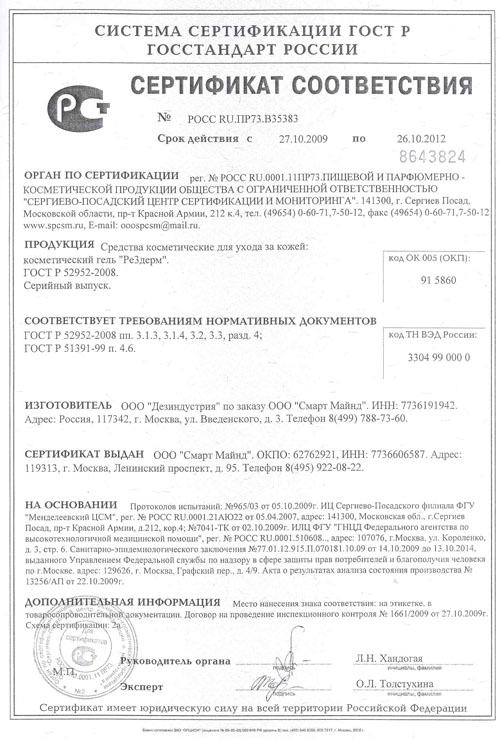

Состав и сертификация
Re3Derm представляет собой запатентованную уникальную формулу - смесь водорастворимых растительных полисахаридов:
- целлосайз (растворимое производное целлюлозы)
- экстракты красных и бурых водорослей
- пектин
Смесь сложная, ее долго и тщательно подбирали (было создано и протестировано более 200 вариантов), и в результате получили состав, с такими характеристиками физико-химической структуры и конфигурацией взаимного расположения активных групп, которые дают возможность одновременно оказывать воздействие на ткани в нескольких благоприятных направлениях. Во-первых, значительно активируется регенераторная функция тканей. Во-вторых, проявляется значительная подвижность клеток кожи. В-третьих, организм воспринимает препарат, как естественную, родственную субстанцию, что позволяет отложить включение «аварийных» процессов для срочного закрытия пораженных поверхностей, приводящих к образованию нефункциональных рубцовых участков. Более того, с помощью препарата зачастую удается добиться дифференциации ткани при регенерации ран, затрагивающих несколько типов тканей. Необходимо подчеркнуть, что все эти типы воздействия оказывает именно смесь полисахаридов. Не каждый компонент, а именно образуемая в процессе изготовления смесь, где отдельные полимеры связываются в определенном сочетании нежесткими связями и взаимодействиями, обеспечивает всю сумму эффектов.
Другое уникальное свойство препарата в том, что содержащиеся в нем полисахариды создают разнонаправленно заряженные частицы, которые связываясь с белками, ферментами, токсинами, патогенными микроорганизмами и др., нейтрализуют их.
Также компоненты Re3derm, взаимодействуя с белковыми веществами раны, образуют защитный гель – оптимальную среду для размножения клеток кожи и дальнейшей регенерации. Re3derm усиливает движение клеток в ране и предотвращает образование рубцов. Использование препарата наиболее эффективно при незамедлительном наложении на пораженный участок кожи, но эффект заметен и на застарелых ранах и рубцах, что особенно актуально в косметологии.
Re3Derm не содержит компонентов животного происхождения, что снижает возможность аллергических реакций у пациента.
Сертификат на профессиональную косметику для Re3Derm:

|